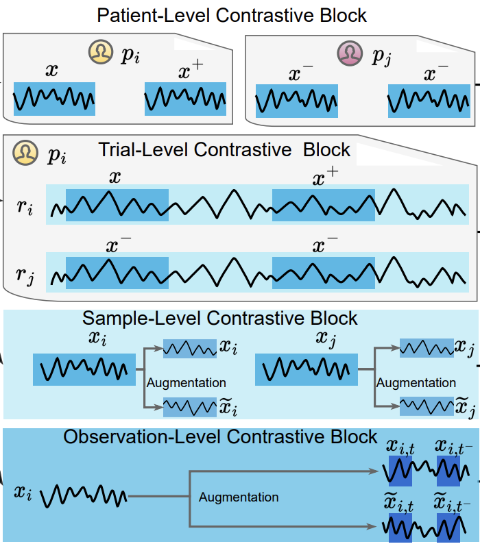
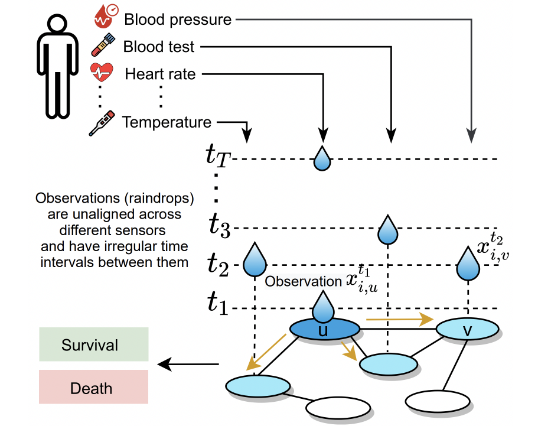
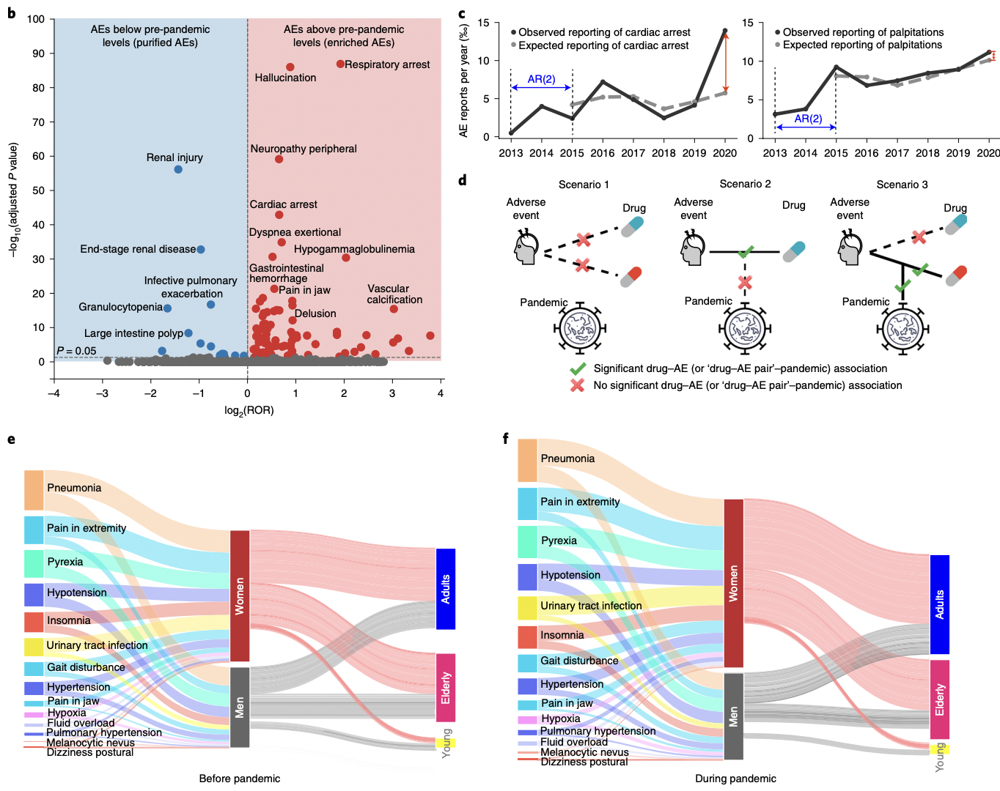
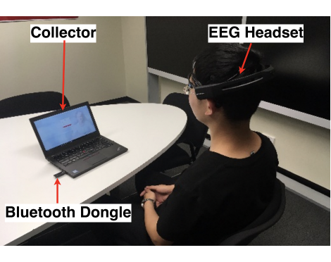

Keywords: contrastive learning, medical time series, self-supervised

Keywords: graph neural networks, irregular time series, sparse time series, incomplete time series, message passing, ICU, sepsis detection

Keywords: pandemic, drug side effects, health inequity, demographics, FDA, FAERS

Keywords: EEG, brain-computer interface, non-invasive, person identification, attention mechanism